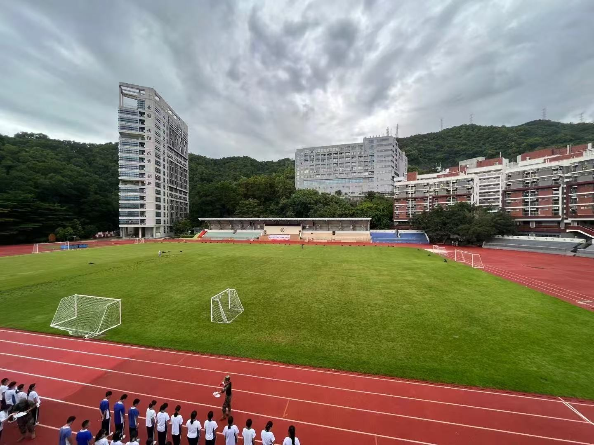
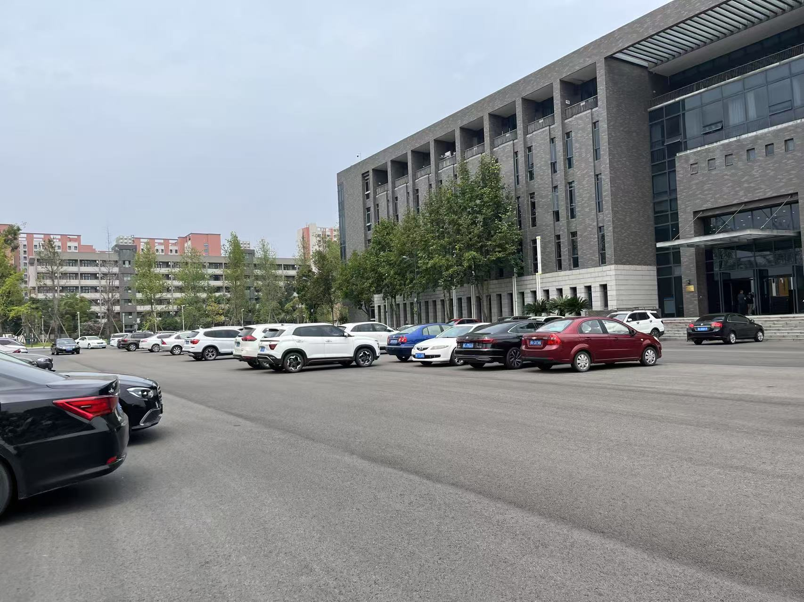

Welcome to Yang's Page
Hi! Nice to meet you!
About me
I'm a Computer Science student at the University of Pittsburgh. I love exploring new things and enjoy challenges.
My friends describe me as energetic, positive, and creative.
Hobbies
I love all kinds of sports like badminton and so on.
I love music and dancing

My Photos
Here are some photos from my daily life:


My School
Why don't we get a look at my schools
Let's start from my high school.
- High school: Hong Ling
- University: Sichuan University
- University: University of Pittsburgh
About Me
Hello! My name is Yang Ye, and I'm currently a junior student majoring in Computer Science at the University of Pittsburgh. I'm a passionate learner, always excited to explore new knowledge and challenges.
I'm an outgoing and active person. Back in school, I served as a class leader, participated in the debate team where I trained my critical thinking and public speaking, and also joined the dance team, performing at various school events.
In addition, I was a member of the badminton team, and I enjoy playing all kinds of sports including running, basketball, and more. Sports have always been a big part of my life—they keep me energetic and inspired.
Outside of academics and sports, I'm deeply interested in technology and creativity. I love building things, learning how things work, and finding ways to express myself through digital tools.
This website is a small space where I share parts of my story—thank you for stopping by!


My School
Here's a look at my academic journey, from high school to university:

Hongling High School
I attended Hongling High School in Shenzhen. This school fostered my curiosity and gave me the foundation to pursue my academic interests. I also joined the dance and debate teams here.

Sichuan University
My university life began at Sichuan University, one of the top universities in western China. It was here that I explored new areas, met amazing people, and built strong academic habits.
University of Pittsburgh
Now I'm studying Computer Science at the University of Pittsburgh. Pitt's diverse community and rich research resources have allowed me to grow personally and academically.
High school: Hong Ling
Hongling High School is a prestigious key secondary school located in Shenzhen, China, renowned for its excellent academic quality and vibrant campus culture.
The school is equipped with advanced teaching facilities and supported by a highly experienced and dedicated faculty. It is committed to cultivating well-rounded students with a strong global perspective and innovative mindset.
With a strong focus on holistic education, Hongling encourages students to thrive across academics, sports, and the arts. Its students have achieved outstanding results in various municipal, provincial, and national competitions.
Guided by the school motto “Virtue, Scholarship, and the Pursuit of Excellence”, Hongling strives not only to deliver knowledge, but also to nurture students with a strong sense of responsibility, leadership, and creativity, empowering them to become future-ready individuals.
University: Sichuan University
Sichuan University is a prestigious and comprehensive university located in Chengdu, Sichuan Province, China. It is recognized as a key institution under China's national “Double First-Class” initiative.
The university was formed through the merger of the former Sichuan University, the former Chengdu University of Science and Technology, and the former West China University of Medical Sciences. It offers a wide range of disciplines, including liberal arts, science, engineering, and medicine, and ranks among the top universities in China.
With the motto “Embrace All Streams, Hold Great Capacity”, Sichuan University emphasizes both academic innovation and talent cultivation. It is home to numerous national key laboratories and research centers, fostering cutting-edge research across disciplines.
The campus is known for its beautiful environment and rich cultural heritage. Over the years, the university has produced a large number of highly qualified graduates and enjoys a strong reputation both in China and internationally.
University: University of Pittsburgh
The University of Pittsburgh (commonly known as Pitt) is a world-renowned research university located in Pittsburgh, Pennsylvania, USA. Founded in 1787, it boasts a long history and a strong academic reputation.
As one of the top public universities in the United States, Pitt is widely recognized for its excellence in medicine, engineering, computer science, business, and law. It is especially distinguished in the fields of medical and biomedical research, with its affiliated University of Pittsburgh Medical Center (UPMC) ranked among the world’s leading healthcare institutions.
Pitt embraces a philosophy that combines innovation with practical experience, offering students a wealth of opportunities in research and internships across disciplines.
With its inclusive academic environment and beautiful campus, Pitt attracts outstanding students from all over the world who are eager to pursue knowledge, collaboration, and global impact.
Experience
Here's a glimpse into my vibrant university life — from research and internships to clubs and travel experiences.
üåü Internship Experience
Media Data Analyst Intern — Shenzhen Nanying Culture Media Co., Ltd. (Jul 2022 – Sep 2022)
- Collected and analyzed user engagement data across major media platforms using SQL and Excel.
- Provided data visualizations and trend reports to support short video production strategies and audience targeting.
- Participated in the planning and background research for the company’s original documentary, including the topic “Urban Development and Natural Resources in Pingshan District.”
- Assisted the team in field interviews and compiled preliminary research documentation to support the film's production direction.
üî¨ Research Projects
Undergraduate Researcher — SCUPI Honors Research Program, Sichuan University
- Modeling of Lung Respiratory Movement Based on 4DCT Images (Team of 3)
- Utilized Python, NumPy, and Open3D to reconstruct 3D point clouds of lung motion over time using 4DCT medical imaging data.
- Segmented the lung region across all time frames, tracked key points on the lung surface, and analyzed movement using affine transformation models.
- Produced a dynamic visualization of lung deformation to assist in radiotherapy planning for lung cancer patients.
- Flexible Exoskeleton Evaluation and Simulation (Team of 4)
- Researched the design and mechanics of flexible wearable robotic exoskeletons to enhance mobility support for the elderly and patients.
- Simulated movement assistance using simplified physical models and motion capture data, evaluating strength and energy efficiency.
- Contributed to the final research presentation and group report under faculty mentorship.
üí¨ Clubs and Campus Life
Outside the classroom, I enjoy a very active and balanced campus life:
- Served as a class representative, assisting faculty with student communication and activity coordination.
- Participated in the Debate Team and represented the school in regional competitions, improving my critical thinking and public speaking skills.
- Joined the Dance Team and performed in multiple school events, while also actively training in the Badminton Team.
✈️ Travel & Exploration
I’m passionate about exploring new environments. Some of my favorite travel moments include:
- Exploring the coast of California, enjoying sunny beaches and cultural vibes.
- Skiing trips with friends in the mountains, embracing winter sports.
- Visiting natural parks and temples in Sichuan, hiking and photographing breathtaking scenery.